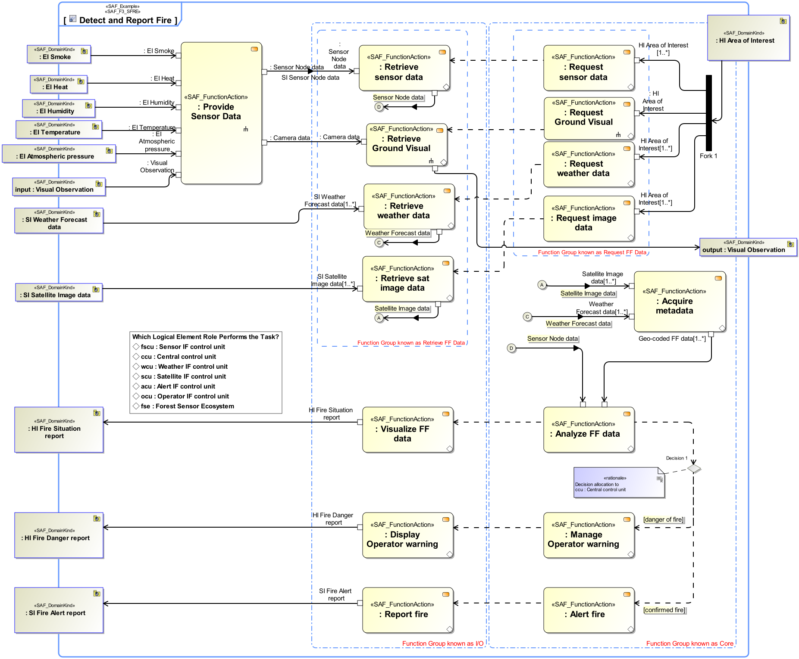

F3_SFRE System Functional Refinement Viewpoint
| Domain | Aspect | Maturity |
|---|---|---|
| Functional | Process & Behavior |

The System Functional Refinement Viewpoint analyses decomposition of System Functions into System Partial Functions in order achieve understanding and agreement about the System functions sufficient to derive system requirements.
The System Functional Refinement Viewpoint supports the “Define System Requirements” activities of the INCOSE SYSTEMS ENGINEERING HANDBOOK 2015 [§4.3]. The System Functional Refinement Viewpoint contributes to the System Function definition.
Activity Diagram featuring System Partial Functions, functional exchange between partial functions. There are explicitely no Swimlanes and no allocations to structure.
The following Stereotypes / Model Elements are used in the Viewpoint: